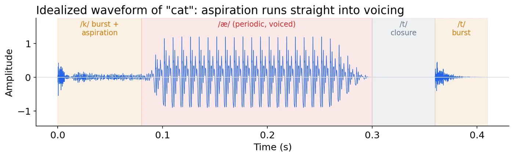
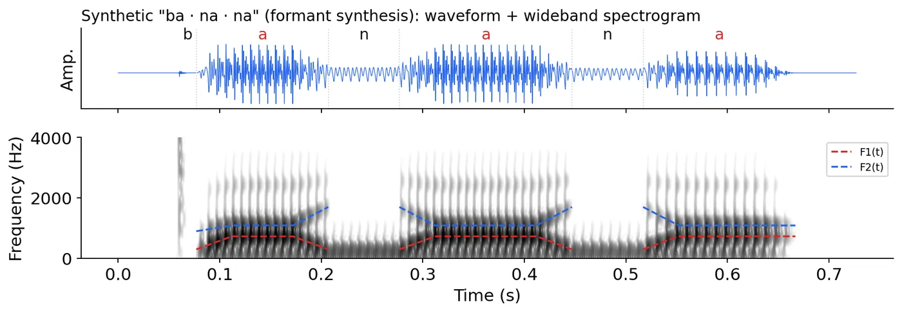

في Lecture 1 قلنا إن الـ machine بتستلم 16,000 رقم في الثانية. النهارده هنمشي مع الصوت من بُق اللي بيتكلم لحد الكمبيوتر: الـ syllable، والموجة، والـ sampling، والـ quantization. وبعدين نشوف ليه الـ vowels مختلفة عن بعض، ونجمّع كل ده في صورة واحدة اسمها spectrogram.
1
إحنا بنحاول نتعرّف على إيه؟
أصغر حتة كلام بننطقها مرة واحدة اسمها syllable. كل syllable ليها nucleus واحد بالظبط (غالباً vowel). الـ consonants اللي قبله اسمها onset، واللي بعده اسمها coda. والـ nucleus مع الـ coda اسمهم rime.
onsetnucleuscodarime = nucleus + coda
الـ nucleus غالباً vowel. طب إيه الفرق بين الـ vowel والـ consonant؟
2
Vowel ولا consonant؟
Vowels
الـ vocal tract مفتوح ومفيش عائق كبير. غالباً voiced. هي اللي شايلة الـ nucleus، وبتبقى أعلى وأطول.
Consonants
فيه تضييق للهوا (الشفايف، أو اللسان، أو السنان). ممكن تبقى voiced زي /b/, /n/ أو voiceless زي /p/, /s/. وأنواعها: plosive، و fricative، و nasal.
دوس على أي صوت وشوف هو إيه:
طب لو بصّينا على الموجة نفسها، نفرّقهم إزاي؟ لازم نفهم الموجة الأول.
3
الموجة: amplitude و frequency و period
الصوت هو ضغط الهوا وهو بيتغير مع الوقت. الـ waveform بترسم الضغط ده (الـ y) قصاد الوقت (الـ x). وأبسط صوت هو pure tone، يعني sine wave:
y = A · sin(2π f t)
Amplitude: حجم الهزة. أكبر يعني صوت أعلى. وزرار الـ volume بيكبّر الموجة بس، الشكل نفسه ما بيتغيرش.
Frequency: عدد الـ cycles في الثانية. وحدتها Hertz: 1 Hz = 1 cycle/s.
Period: وقت cycle واحدة: T = 1 / f.
مثال المحاضرةtone عند 440 Hz بيكرر نفسه كل T = 1/440 ≈ 2.27 ms. سيب الـ slider على 440 وشوف الـ T.
بس الكلام مش pure tone. فيه نوعين صوت مختلفين خالص.
4
Voiced ولا voiceless؟

كلمة "cat" من المحاضرة: الـ burst بتاع الـ /k/ وبعده aspiration (noise)، داخلين على طول في الـ /æ/ الـ voiced والـ periodic. وبعدين silence واللسان بيقفل عشان الـ /t/، وبعده الـ release burst.
دلوقتي عندنا موجة متصلة. الكمبيوتر هيخزنها إزاي؟
5
الـ sampling: ناخد قياس كل شوية
الموجة الحقيقية continuous، يعني فيها عدد لا نهائي من القيم. الكمبيوتر ما يقدرش يخزن ده، فبيقيس الـ amplitude كل فترة ثابتة ويحتفظ بالنقط دي بس. عدد القياسات في الثانية اسمه sampling ratefs.
الموبايل واللابتوب44.1 / 48 kHz
أغلب الـ ASR models16 kHzwideband speech
التليفون8 kHznarrowband، بيعدّي تقريباً 300–3400 Hz بس
fs > 2 · fmax · Nyquist frequency = fs / 2
الـ Nyquist rule: الـ sampling rate يقدر يمثّل بس الـ frequencies اللي أقل من نصّه. وأي frequency أعلى من النص ما بتختفيش. بتطلع موجة مزيفة أوطى، وده اسمه aliasing. حرّك الـ sliders:
القانونالـ frequency اللي فوق النص بتطلع عند |f − k · fs|، وk هو أقرب مضاعف لـ fs. مثال المحاضرة: fs = 11 Hz، يعني الـ Nyquist هو 5.5 Hz، وموجة 9 Hz بتظهر كأنها |9 − 11| = 2 Hz.
ليه 16 kHz؟بيحتفظ بكل حاجة تحت 8 kHz، وده بيغطي أهم الـ frequencies اللي بنفهم بيها الكلام. عشان كده هو الـ standard في الـ ASR.
كده قسّمنا الوقت لنقط. فاضل الـ amplitude نفسه: هنخزنه بدقة قد إيه؟
6
الـ quantization: نقرّب كل قيمة
كل sample بتتقرّب لأقرب مستوى من عدد ثابت من المستويات. العدد ده بيحدده الـ bit depth، يعني عدد الـ bits في كل sample. وعندك n bits تقدر تمثّل 2n مستوى.
bits أقل يعني مستويات أقل، فتلاقي «سلّم» واضح و noise مسموع. والفرق بين الموجة الأصلية والسلّم ده اسمه quantization noise. في الـ 16-bit عندك 216 = 65,536 مستوى، فالـ noise ده أصغر بكتير من إنك تسمعه.
بقى عندنا أرقام. بس الكلام بيتغير كل لحظة، فإزاي نحلّله؟
7
الـ framing: نقطّع الكلام لحتت صغيرة
الكلام non-stationary: الـ frequencies بتاعته بتتغير كل لحظة. بس أغلب أدوات التحليل (زي الـ DFT في Lecture 3) بتفترض إن الـ signal ثابتة جوه الحتة اللي بتبص عليها. الحل إننا نقطّعه لـ frames قصيرة ومتداخلة، قصيرة كفاية إنها تبان ثابتة جواها.
كل frame بتتضرب في window (زي الـ Hamming) بيخلّي الأطراف تقرّب للصفر. والـ overlap بيضمن إن الـ sample اللي اتظلمت على طرف frame، تاخد وزنها كامل في الـ frame اللي بعدها.
هتشوفها تانيالـ frame length والـ hop هيرجعوا بنفس الشكل في الـ STFT والـ MFCC في Lecture 3.
دلوقتي نوصف الصوت اللي جوه كل frame. هنا فيه كلمات ناس كتير بتلخبط بينها.
8
اللي بنقيسه، واللي بنحسّه
بنقيسه من الـ signal (physical)
الـ listener بيحسّه (perceived)
جانب الـ frequency
F0 (fundamental frequency): سرعة اهتزاز الـ vocal folds، يعني 1 / T
Pitch: الصوت عالي ولا واطي
جانب الـ amplitude
Intensity: القدرة اللي في الموجة، I ∝ A²، بالـ dB
Loudness: الصوت عالي ولا واطي في ودنك
مرتبطين ببعض جامد، بس مش نفس الحاجة. الإحساس nonlinear، وبيعتمد على الـ frequency.
لو كبّرت الـ amplitude، الـ intensity بتزيد قد إيه؟
الـ F0 مش رقم واحد للجملة كلها. بيتغير وإنت بتتكلم.
9
الـ F0 مع الوقت: الـ pitch contour
لو حسبنا الـ F0 لكل frame هيطلع لنا خط اسمه pitch contour (أو pitch track). ونفس الكلام بـ contour مختلف ممكن يبقى معناه مختلف.
الجملة الخبرية: الـ F0 بيقع لتحت. السؤال: الـ F0 بيطلع لفوق.
الخط بيتقطع عند الـ /k/ بتاع "coming"، عشان الـ F0 موجود بس لما الـ vocal folds بتهتز، والـ /k/ voiceless. والتقطيع ده هو اللي هتعلّم عليه voiced/unvoiced في Assignment 2.
والـ intensity بنقيسها بنفس الطريقة لكل frame، بالـ RMS (root-mean-square) amplitude.
طب لو الـ F0 هو هو، إيه اللي بيخلّي «إي» تفرق عن «آه»؟
10
الـ source–filter model
Source
في الأصوات الـ voiced، الـ vocal folds بتهتز وتطلّع buzz مليان harmonics (مضاعفات الـ F0). وفي الـ voiceless، الـ source بيبقى turbulent noise عند تضييق، ومفيش F0 خالص. والـ voiced fricatives زي /z/, /v/ بتستخدم المصدرين مع بعض.
Filter
الـ vocal tract (الزور، والبُق، والمناخير) تجويف بيعمل resonance. شكله، اللي بيحدده اللسان والفك والشفايف، بيكبّر frequencies ويكتم غيرها. الـ frequencies اللي بيكبّرها اسمها formants.
غيّر الـ F0: الخطوط (الـ harmonics) بتتحرك، بس القمم ثابتة في مكانها. غيّر الـ vowel: القمم بتتنقل، والـ harmonics مكانها.
جرّبها على نفسكقول «إي» وبعدين «آه» وإيدك على زورك. الـ buzz (الـ source) تقريباً ما اتغيرش، بس الصوت اتغير خالص. ده شغل الـ filter.
أهم اتنين formants اسمهم F1 و F2. نحطهم على خريطة.
11
F1 و F2: خريطة الـ vowels
F1 ↔ ارتفاع اللسانلسان عالي زي «ee» يعني F1 واطي. ولسان واطي زي «ah» يعني F1 عالي.
F2 ↔ اللسان لقدّام ولا لورالقدّام زي «ee» يعني F2 عالي. ولورا زي «oo» يعني F2 واطي. ولما الشفايف تدوّر، الـ F2 بيقلّ كمان.
الأرقام دي متوسطات رجالة من Peterson & Barney (1952). مش من السلايدز، هي مرجع مشهور عشان تشوف الشكل.
خد بالكالـ vocal tract الأقصر (ستات وأطفال) بيعلّي كل الـ formants. عشان كده الـ ASR بيحتاج speaker normalization.
كل اللي فات (الوقت، والـ frequency، والطاقة، والـ formants) بيبان في صورة واحدة.
12
الـ spectrogram: صورة للصوت

«ba · na · na» من المحاضرة. فوق الـ waveform، وتحت الـ spectrogram: الـ x هو الوقت، والـ y هو الـ frequency، والأغمق معناه طاقة أكتر.
Vowelخطوط رأسية (كل خط = اهتزازة من الـ vocal folds)، وفيها شرايط أفقية غامقة تخينة هي الـ formants: F1 تحت و F2 فوقه.
Nasalلسه voiced بس أضعف، والطاقة أغلبها في شريط واطي قريب من 250 Hz. مفيش burst ومفيش silence.
Burstلطشة رأسية رفيعة. الـ /b/ هنا قصير وضعيف.
Silenceمساحة فاضية.
في Praat الصورة رمادي، والأغمق = طاقة أكتر. وفي color maps زي magma، الأفتح = طاقة أكتر.
اقرأ الـ spectrogram
نلمّ الـ lecture.
13
الخلاصة، واختبر نفسك
Syllableonset + nucleus + coda. والـ nucleus واحد بس.
T = 1/fالـ voiced quasi-periodic، والـ voiceless noise.
Samplingبيقطّع الوقت. fs > 2fmax، و16 kHz هو الـ standard.
Quantizationبيقطّع الـ amplitude. 2n مستوى، و16-bit هو الـ standard.
F1 / F2F1 = ارتفاع اللسان، و F2 = لقدّام ولا لورا (والتدوير).
Spectrogramالوقت × الـ frequency × الطاقة في صورة واحدة.
احسب
tone عند 250 Hz، الـ period بتاعه كام؟
T = 1/250 = 0.004 s = 4 ms
عايز تسجّل صوت فيه frequencies لحد 8 kHz. أقل sampling rate إيه؟
لازم fs > 2 × 8 = 16 kHz. عشان كده الـ 16 kHz هو الـ standard.
تليفون بيعمل sample عند 8 kHz، وفيه tone عند 5 kHz دخل من غير filter. هيظهر عند كام؟
الـ Nyquist هو 4 kHz، والـ 5 kHz أعلى منه، فيحصل aliasing: |5 − 8| = 3 kHz.
8-bit audio فيه كام مستوى؟ و4-bit؟
28 = 256 و24 = 16. كل bit بتشيلها بتقسم المستويات على 2.
الـ amplitude اتضاعف. الـ intensity اتغيرت قد إيه؟
I ∝ A²، يعني ×4، وده تقريباً +6 dB.
مين الـ F1 بتاعه أعلى: «ee» ولا «ah»؟ وليه؟
«ah». اللسان فيها واطي، واللسان الواطي معناه F1 عالي (حوالي 730 قصاد 270 Hz).
1 ثانية عند 16 kHz، و25 ms frame و10 ms hop. كام frame؟
الـ frame = 400 sample، والـ hop = 160. يبقى 1 + ⌊(16000 − 400) / 160⌋ = 1 + 97 = 98 frame. (القانون ده هيتشرح في Lecture 3.)
Assignment 2على تسجيلك من Assignment 1: ارسمه وعلّم الـ voiced والـ unvoiced. قيس F1 و F2 لـ 2 أو 3 vowels في Praat. علّم spectrogram بإيدك. وبعدين بوّظه: 16k → 8k → 4k و16 → 8 → 4 bit، واحسب الـ WER لكل نسخة. السؤال: البوظان بيبقى مسموع إمتى، والـ ASR بيقع إمتى؟ وهل النقطتين دول واحد؟
الجاي في Lecture 3: الـ spectrogram ده بيتحسب إزاي؟ DFT، و windowing، و mel، و MFCC.